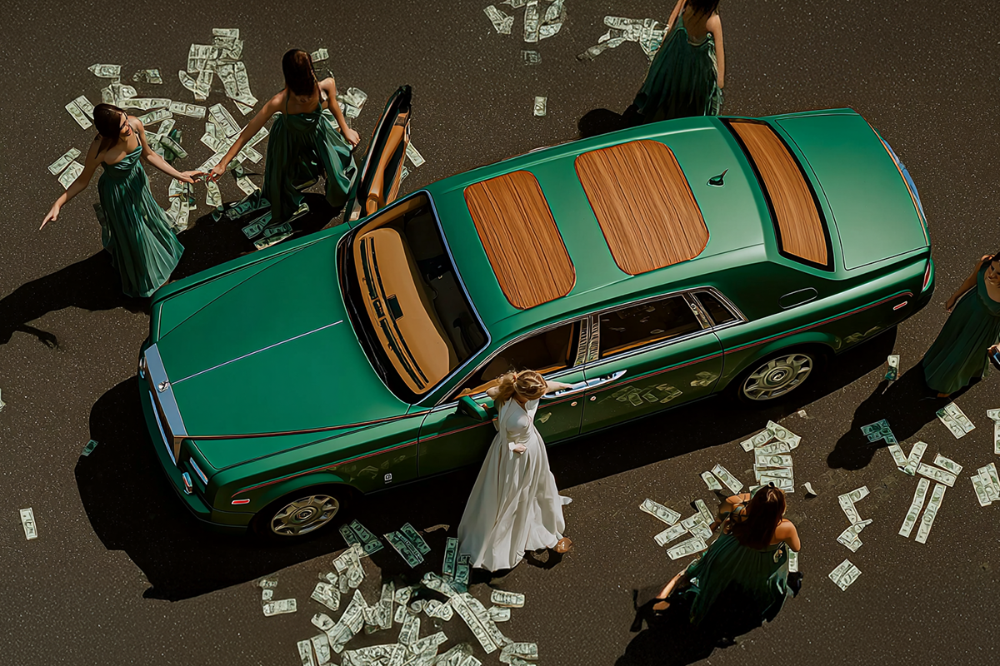

Los millennials y el compromiso inesperado
Nuestra generación ya se compromete… aunque no sea con matrimonio
Nuestra generación ya se compromete… aunque no sea con matrimonio

Selena Gómez, Dua Lipa y Taylor Swift dijeron “sí” este 2025. Y aunque sus anillos brillan en Instagram, para nuestra generación el verdadero compromiso no siempre tiene forma de matrimonio.
Si pensabas que este año iba a estar marcado solo por conciertos y giras, te equivocaste: el 2025 se transformó en la temporada de compromisos millennial.
Selena Gómez sorprendió con su compromiso, Dua Lipa se unió a la lista y Taylor Swift cerró el círculo confirmando lo que muchos fans esperaban.
Pero más allá del chisme, hay un detalle interesante: todas son millennials, igual que nosotros. O sea, quienes crecimos con sus canciones y las seguimos en redes, hoy vemos cómo ellas también entran a una etapa distinta. Y, de alguna forma, nos reflejamos: porque los compromisos ya no son solo cosa de películas románticas, sino parte de esta nueva adultez que estamos viviendo.

Nuestros papás se casaban antes de los 30. Nosotros, en cambio, redefinimos qué significa comprometerse. Postergamos matrimonios, priorizamos experiencias, viajes o proyectos personales. El “sí, acepto” ya no es un deber, sino una elección.
Y aun así, empezamos a comprometernos… pero en otras áreas. A veces, en cosas que no pensábamos que haríamos:
Y así… El compromiso millennial está lleno de estos giros inesperados.
Quizás nunca pensaste que ibas a emocionarte con un compromiso de Dua Lipa. Tampoco que ibas a contratar un seguro o preocuparte de tus finanzas. Pero acá estamos: los compromisos de nuestra generación son distintos e inesperados, y, muchas veces, más importantes de lo que creemos.
Porque al final, comprometerse, no siempre es dar el “sí” frente al altar. A veces, es elegir cuidarte, planear tu futuro y proteger lo que más valoras.
 Actualidad
ActualidadEl recordado programa noventero “Venga Conmigo” marcó a toda una generación en Chile. Su exitoso segmento “Corazones Service” se transformó…
 Actualidad
ActualidadHace aproximadamente 2 meses comenzamos con el cierre de lo que empezó en julio como el “Compariniverse”.
 Actualidad
ActualidadHace unos meses lanzamos Compariniverse: la primera campaña en Chile protagonizada por una celebridad completamente clonada con IA.